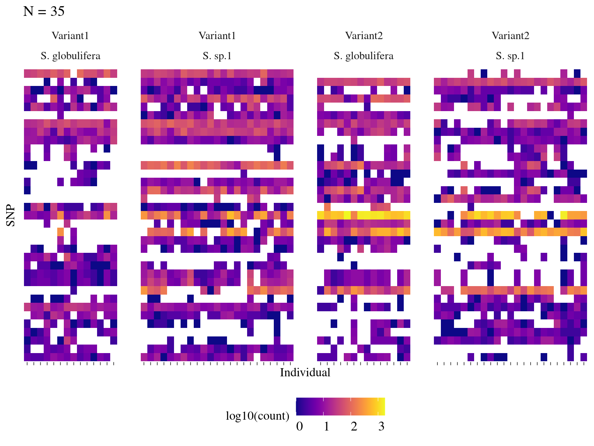

This book is in Open Review. I want your feedback to make the book better for you and other readers. To add your annotation, select some text and then click the on the pop-up menu. To see the annotations of others, click the in the upper right hand corner of the page
Chapter 1 Species-specific
SNPs specific to the species
This chapter support..
1.1 Single-SNPs
1.2 Multi-SNPs
1.3 Alternative splicings
1.4 Microsattelite
